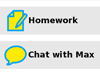

What is Sugar?
"We like to think that a child's play is unconstrained—but when children appear to feel joyous and free, this may merely hide from their minds their purposefulness; you can see this more clearly when you attempt to drag them away from their chosen tasks. For they are exploring their worlds to see what's there, making explanations of what those things are, and imagining what else could be; exploring, explaining and learning are among a child's most purposeful urges and goals. The playfulness of childhood is the most demanding teacher we have. Never again in those children's lives will anything drive them to work so hard." —Marvin Minsky, The Emotion Machine
Sugar is a learning platform that reinvents how computers are used for education. Collaboration, reflection, and discovery are integrated directly into the user interface. Sugar promotes "studio thinking [1]" and "reflective practice [2]". Through Sugar's clarity of design, children and teachers have the opportunity to use computers on their own terms. Students can reshape, reinvent, and reapply both software and content into powerful learning activities. Sugar's focus on sharing, criticism, and exploration is grounded in the culture of free and open-source software (FOSS).
 |
Sugar facilitates sharing and collaboration.
Children can write documents, share books and pictures, or make music together with ease.
|
|
There are no files, folders, or applications.
|
|  |
Everything is saved automatically.
|
 |
A Journal is used for accessing data.
|
 |
Sugar is free and open-source software.
|
Note to parents and teachers
The Sugar Philosophy
Information is about nouns. Learning is about verbs. The Sugar user interface differs from traditional user interfaces in that it is based on both cognitive and social constructivism. We believe that learners should engage in exploration and collaboration. The Sugar platform is based on three defining human principles. These are the pillars of user experience for learning:
- Everyone is a teacher and a learner.
- Humans are social beings.
- Humans are expressive.
Two principles define the Sugar platform:
- You learn through doing, so if you want to learn more, you want to do more.
- Love is a better master than duty—you want people to engage in things that are authentic to them, things that they love. Internal motivation almost always trumps external motivations.
Three experiences characterize the Sugar platform:
- Sharing: The Sugar interface always shows the presence of other learners. Collaboration is a first-order experience. Students and teachers dialog with each other, support each other, critique each other, and share ideas.
- Reflecting: Sugar uses a "Journal" to record each learner's activity. The Journal serves as a place for reflection and assessment of progress.
- Discovering: Sugar can accommodate a wide variety of users, with different levels of skill in terms of reading, language, and different levels of experience with computing. It is easy to approach, yet it doesn't put an upper bound on personal expression. One can peel away layers and go deeper and deeper, with no restrictions.
Sugar is written in Python, an easy-to-learn interpreted language [3]. This allows the direct appropriation of ideas in whatever realm the learner is exploring; music, browsing, reading, writing, programming, or graphics. The student can go further. They are not going to hit a wall. They can, at every level, engage with and affect the very tools they are using for their personal expression.
Throughout this manual we have added brief "Note to parents and teachers" sections which explains the philosophy behind the Sugar platform. We hope these sections help you guide your children and students through the learning process.
Sugar Labs
Sugar was designed for One Laptop per Child (OLPC), as part of an effort to provide an opportunity for a quality education to every children through the distribution of connected laptop computers, our most powerful tools for expression. Sugar is the user interface used on the OLPC XO laptop.
Sugar Labs is a non-profit foundation whose mission is to produce, distribute, and support the use of the Sugar learning platform. Sugar Labs supports the community of educators and software developers who want to extend the platform and who have been creating Sugar Activities. Sugar is a community project. It is available under the open-source GNU General Public License (GPL) and free to anyone who wants to use or extend it.
[1] Studio thinking is a term used to describe how visual arts teachers teach and what visual arts students learn. The term is detailed in Studio Thinking: The Real Benefits of Visual Arts Education. Studio thinking includes "studio structures": demonstrations, projects, and critiques; as well as "studio habits of mind": develop craft, engage and persist, envision, express, observe, reflect, stretch and explore, and understand.the art world. In the context of Sugar, studio thinking is applied not just to the arts, but to all disciplines.
[2] Reflective practice is a concept introduced by Donald Schön in his book The Reflective Practitioner. Reflective practice involves students applying their own experiences to practice while being mentored by domain experts. In the context of Sugar, the expert could be a teacher, a parent, a community member, or a fellow student.
[3] An interpreted language is a programming language whose instructions are interpreted "on the fly" (or compiled to a virtual machine code) as opposed to precompiled. The significant of interpreted languages to the Sugar platform include: platform independence, ease of debugging, ready access to source code, and small program size. Python is a general-purpose, high-level programming language. It emphasizes code readability and features a minimalist syntax and comprehensive standard library.
Author : Introduction
© Walter Bender 2006, 2008
Modifications:
adam hyde 2006, 2007, 2008
David Farning 2008
Emily Kaplan 2008
Janet Swisher 2008
Luke Faraone 2008
Rita Freudenberg 2008
Rob Mason 2008
License : General Public License
Produced in FLOSS Manuals (http://www.flossmanuals.net)